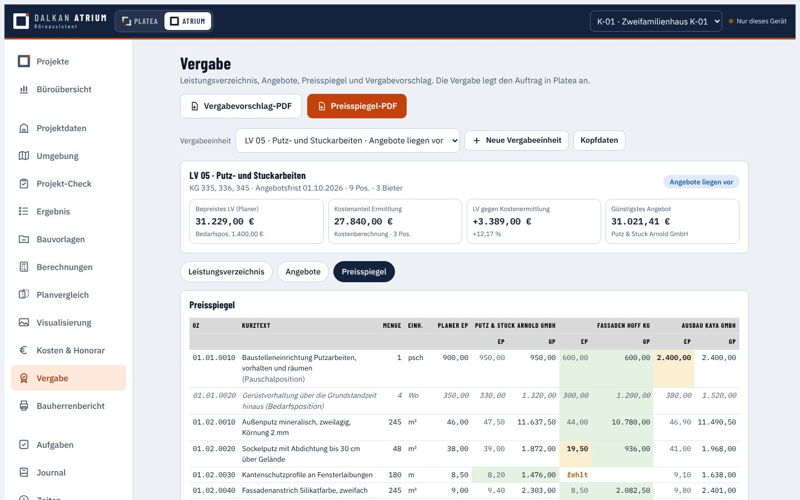
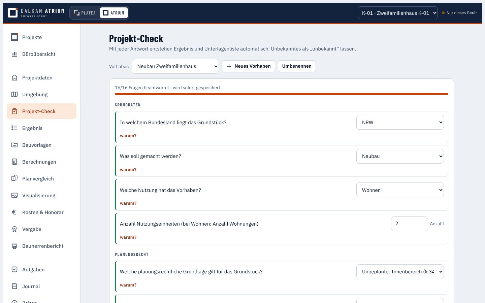
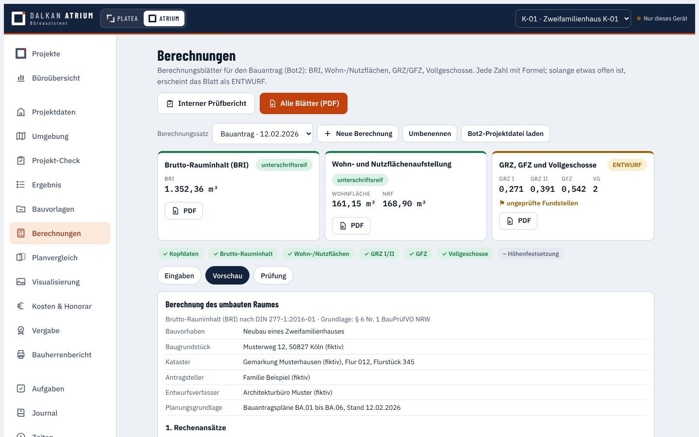
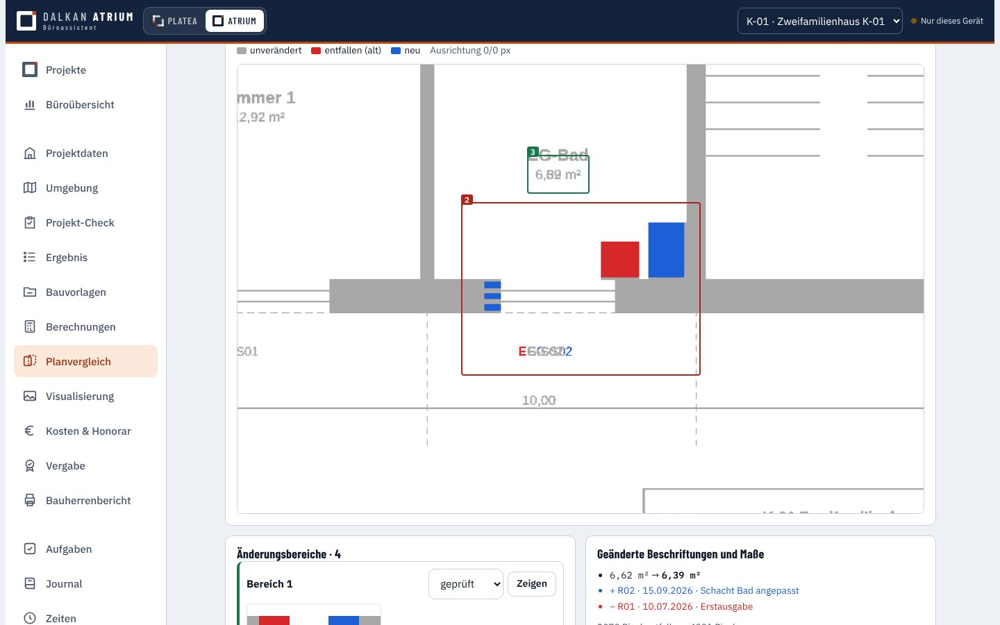
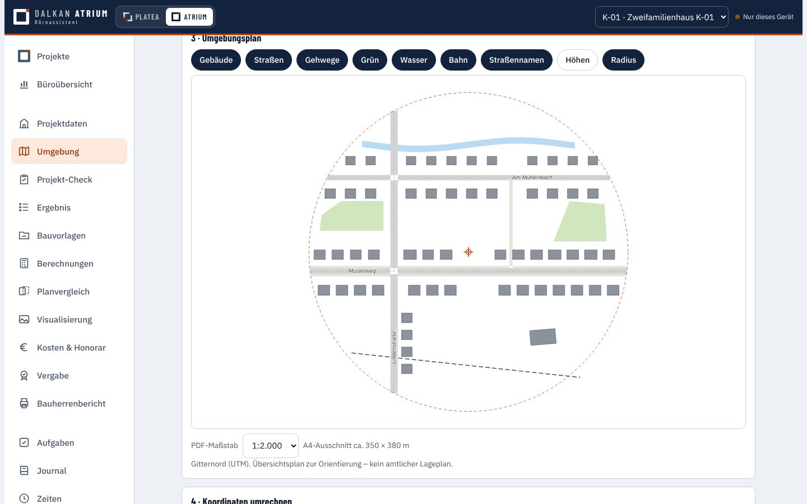
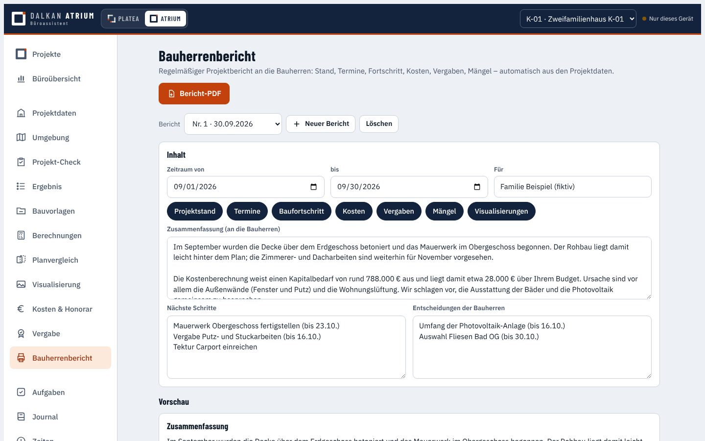

Ist das Vorhaben genehmigungsfähig? Welche Unterlagen fehlen? Was kostet es, und wer baut es zu welchem Preis? Atrium beantwortet diese Fragen mit dem eigenen Regelwerk – nachvollziehbar, mit Quelle und als fertiges PDF.Can the project be approved? Which documents are missing? What does it cost, and who builds it at what price? Atrium answers these questions with my own rule set – traceable, with sources, as finished PDFs.Proje ruhsat alabilir mi? Hangi belgeler eksik? Maliyeti ne ve kim hangi fiyata yapar? Atrium bu soruları kendi kural setimle yanıtlar – izlenebilir, kaynaklı ve hazır PDF olarak.


Jedes Modul arbeitet mit demselben Projekt. Eingaben werden einmal gemacht und überall verwendet – bis hin zur Baustelle in Platea.Every module works on the same project. Data is entered once and used everywhere – all the way to the site in Platea.Her modül aynı proje üzerinde çalışır. Veriler bir kez girilir ve her yerde kullanılır – Platea'daki şantiyeye kadar.
Ampel je Projekt, nächste Termine, Kapitalbedarf gegenüber Budget, Honorar und der tatsächliche Aufwand in Stunden – damit früh sichtbar wird, wo es hakt.A traffic light per project, upcoming dates, funding need against budget, fee and actual effort in hours – so problems show up early.Proje başına trafik ışığı, yaklaşan tarihler, bütçeye karşı kaynak ihtiyacı, ücret ve saat olarak gerçek harcama – sorun nerede, erkenden görünsün diye.
Fragen zum Vorhaben, Antworten im eigenen Regelwerk (BauO NRW): daraus entstehen Verfahrensart, Hinweise und die vollständige Liste der Bauvorlagen mit Status.Questions about the project, answered with my own rule set (NRW building code): the result is the procedure, notes and the complete list of permit documents with status.Proje hakkında sorular, kendi kural setimde (BauO NRW) yanıtlar: buradan izin süreci, uyarılar ve durumlarıyla birlikte eksiksiz ruhsat belgesi listesi çıkar.

Unterschriftsreife Berechnungsblätter mit Formeln und Herkunft jedes Werts. Fehlt etwas oder ist es ungeprüft, erscheint das Blatt als ENTWURF.Calculation sheets ready to sign, with formulas and the source of every value. If anything is missing or unchecked, the sheet appears as a DRAFT.İmzaya hazır hesap föyleri; formüller ve her değerin kaynağı ile. Bir şey eksik ya da kontrol edilmemişse föy TASLAK olarak çıkar.

Zwei Planstände übereinander: entfallen rot, neu blau. Änderungsbereiche werden nummeriert, geänderte Maße und Beschriftungen aufgelistet.Two drawing revisions overlaid: removed in red, new in blue. Changed areas are numbered, changed dimensions and labels listed.İki plan revizyonu üst üste: kalkanlar kırmızı, yeniler mavi. Değişen alanlar numaralanır, değişen ölçü ve yazılar listelenir.

Von der Kostenschätzung bis zur Feststellung, mit Versionen und Prüfungen: ein fehlender Preis ist nicht 0 €, Brutto wird nicht doppelt besteuert. Das Honorar entsteht aus denselben Zahlen.From the cost estimate to the final account, with versions and checks: a missing price is not €0, gross is never taxed twice. The fee is derived from the same figures.Ön tahminden kesin hesaba, sürümler ve kontrollerle: eksik fiyat 0 € sayılmaz, brüt tutar iki kez vergilendirilmez. Ücret aynı sayılardan hesaplanır.

LV aus der Kostenberechnung, Bieter-LV als Excel, Angebote zurück einlesen. Der Preisspiegel rechnet nach, zeigt fehlende und auffällige Preise – die Vergabe legt den Auftrag in Platea an.Bill of quantities from the cost calculation, bidder version as Excel, bids read back in. The comparison recalculates, flags missing and unusual prices – the award creates the contract in Platea.Keşif maliyet hesabından çıkar, firmalara Excel olarak gider, teklifler geri okunur. Fiyat karşılaştırması yeniden hesaplar, eksik ve dikkat çekici fiyatları gösterir – ihale, sözleşmeyi Platea'da açar.
Gebäude, Gelände und Straßen aus offenen Daten (LoD2, DGM1, OpenStreetMap), aufbereitet mit dem eigenen Werkzeug Bot1: Umgebungsplan, Koordinaten, Geländehöhe.Buildings, terrain and streets from open data (LoD2, DGM1, OpenStreetMap), prepared with my own tool Bot1: site plan, coordinates, terrain height.Açık verilerden binalar, arazi ve yollar (LoD2, DGM1, OpenStreetMap), kendi aracım Bot1 ile hazırlanır: çevre planı, koordinatlar, arazi kotu.

Stand, Termine, Fortschritt, Kosten, Vergaben und Mängel – automatisch aus dem Projekt. Eine verständliche Zusammenfassung entwirft auf Wunsch Claude.Status, dates, progress, costs, awards and defects – automatically from the project. On request Claude drafts a clear summary.Durum, tarihler, ilerleme, maliyet, ihaleler ve kusurlar – otomatik olarak projeden. İstenirse anlaşılır bir özeti Claude taslak olarak yazar.

Prompt-Baukasten, Vorlage aus dem 3D-Modell, Render-Runden mit Rückmeldungen.Prompt builder, base image from the 3D model, render rounds with feedback.Prompt hazırlayıcı, 3D modelden altlık, geri bildirimli render turları.
Alle Projektdaten in einem Dokument – auf Wunsch anonymisiert.All project data in one document – anonymised on request.Tüm proje verileri tek belgede – istenirse anonim.
Was ist offen, was wurde besprochen, was hat sich geändert.What is open, what was discussed, what changed.Ne açık, ne konuşuldu, ne değişti.
Stunden nach Leistungsphase – Grundlage der Auswertung.Hours by work stage – the basis of the analysis.Hizmet aşamasına göre saatler – değerlendirmenin temeli.
Eigene Regeln in Excel, jederzeit erweiterbar.Own rules in Excel, extendable at any time.Kendi kurallarım Excel'de, istenildiği zaman genişletilebilir.
Bedienung auf Deutsch, Englisch und Türkisch; Unterlagen auf Deutsch.Interface in German, English and Turkish; documents in German.Almanca, İngilizce ve Türkçe kullanım; belgeler Almanca.
Musterprojekte K-01 und K-02 mit Kosten, Vergabe, Umgebung und Bauherrenbericht.Sample projects K-01 and K-02 with costs, tendering, surroundings and client report.Maliyet, ihale, çevre ve işveren raporuyla K-01 ve K-02 örnek projeleri.